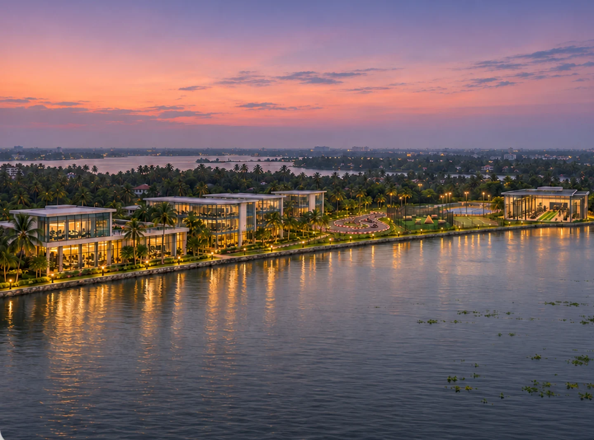

Willingdon Island, Kochi
 Tech Island
Tech Island
A proposed campus for technology, work and play.
The campus vision
One island. Two destinations.
The proposed campus pairs a public-facing work and lifestyle district with a separately operated, secure data centre.
- Proposed campus
- 10 acres
- Proposed built-up area
- 175,000 sq. ft.
- Planned data centre IT load
- 10 MW
Planning figures are preliminary. Land rights, permitted use and approvals remain subject to due diligence.

Phase I · Proposed development
AI IT Park & Play Arena
Phase I brings enterprise workspace, coworking and leisure together in a public-facing district on Willingdon Island.
Workspaces for technology teams
The plan includes flexible coworking, team suites and enterprise workplaces.
Play and recreation
The proposed play area brings together go-karting, skating, paintball and indoor recreation.
Explore Phase I ↗Phase II · Proposed development
Kochi Data Centre
A planned 10 MW data centre on a dedicated parcel within Tech Island. The concept separates secure infrastructure from Phase I’s public areas.
Capacity and scope are subject to planning and technical validation.
Explore Phase II ↗
Project roadmap
What moves the project forward
IGNIVA has reported initial parcel review and feasibility work. The next decisions depend on site rights, engineering, tenant requirements and financing.
- Site and permissionsVerify the leasehold position, permitted use and applicable coastal, aviation and planning controls.
- Phase I designConfirm workspace and amenity mix, assess operator demand and advance the site design.
- Phase II engineeringValidate utilities, cooling, fibre and prospective anchor-tenant requirements.
- Commercial commitmentsAdvance appraisal, procurement and funding before committing to delivery.
- Phased deliverySequence ISLE CLUB activation and modular data centre handovers as approvals and commercial milestones are met.
The campus, facilities and delivery sequence remain proposed.
Technology infrastructure and commercial partnerships in Kerala
Organisations exploring the proposed AI IT park, enterprise workspace or data centre can request a project briefing. The IGNIVA Group portfolio provides context on the developer’s work across convention venues, hospitality, commercial properties and logistics.